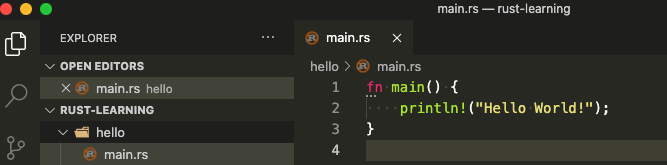
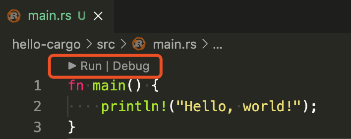

Rust 劝退系列 02：第一个 Rust 程序
大家好，我是站长 polarisxu。
上节我们准备好了 Rust 环境，现在开始我们的第一个 Rust 程序。
01 Hello World
在终端执行如下命令，创建相关目录结构：
$ mkdir ~/rust-learning
$ cd ~/rust-learning
$ mkdir hello
$ cd hello
启动 VSCode，在 Welcome 页面选择打开文件夹：~/rust-learning，在 hello 目录下创建 main.rs 文件，输入如下代码：

细心的读者可能看到了 fn 下面的三个点，鼠标放上去提示：
file not included in module tree rust-analyzer(unlinked-file)
这个提示的详细说明见链接：https://rust-analyzer.github.io/manual.html#unlinked-file。大意是，当前文件不在任何 crate 中。也就是说，rust-analyzer 插件要求标准的 cargo 目录。因此，编译运行该程序得通过终端：
$ rustc main.rs
$ ./main
Hello World!
这就是你的第一个 Rust 程序。关于 rustc，目前我们只需要知道它是 Rust 的编译器即可，因为实际中很少直接使用它。
02 cargo 版 Hello World
上文说，编译 Rust 项目，很少直接使用 rustc 这个 Rust 编译器，那应该用什么呢？
简单的程序（比如上面的单个文件）可能偶尔会用 rustc，但绝大部分时候，特别是项目中，我们应该一直使用 Rust 的生成工具和依赖管理器 Cargo。
现在就介绍下 Cargo 这个工具。
Cargo
在安装完 rustup 后，Rust 工具链会默认安装上，这包括 Cargo 这个工具。
因为这个工具很重要，官方直接提供了一个 Cargo 的手册：https://doc.rust-lang.org/cargo/index.html。
Cargo 是 Rust 的包管理器。它能够下载 Rust 包的依赖，编译包，制作可分发的包，并将它们上传到 crates.io 上（这是 Rust 社区的包注册中心）。
这个手册内容较多，有兴趣可以通读下，后续也可以用于查阅。我们这里只介绍经常使用的相关命令。先看一眼 Cargo 命令的相关帮助：
$ cargo
Rust's package manager
USAGE:
cargo [+toolchain] [OPTIONS] [SUBCOMMAND]
OPTIONS:
-V, --version Print version info and exit
--list List installed commands
--explain <CODE> Run `rustc --explain CODE`
-v, --verbose Use verbose output (-vv very verbose/build.rs output)
-q, --quiet No output printed to stdout
--color <WHEN> Coloring: auto, always, never
--frozen Require Cargo.lock and cache are up to date
--locked Require Cargo.lock is up to date
--offline Run without accessing the network
-Z <FLAG>... Unstable (nightly-only) flags to Cargo, see 'cargo -Z help' for details
-h, --help Prints help information
Some common cargo commands are (see all commands with --list):
build, b Compile the current package
check, c Analyze the current package and report errors, but don't build object files
clean Remove the target directory
doc Build this package's and its dependencies' documentation
new Create a new cargo package
init Create a new cargo package in an existing directory
run, r Run a binary or example of the local package
test, t Run the tests
bench Run the benchmarks
update Update dependencies listed in Cargo.lock
search Search registry for crates
publish Package and upload this package to the registry
install Install a Rust binary. Default location is $HOME/.cargo/bin
uninstall Uninstall a Rust binary
See 'cargo help <command>' for more information on a specific command.
常用的命令如下：
- 使用
cargo new创建新的 package（包），包括可执行的和普通包。 - 使用
cargo build构建你的包。 - 使用
cargo run生成和运行包。 - 使用
cargo test测试你的包。 - 使用
cargo check进行包分析，并报告错误。 - 使用
cargo doc为你的包（以及依赖包）生成文档。 - 使用
cargo publish将包发布到 crates.io。 - 使用
cargo install安装 Rust 可执行程序。
借助 VSCode，很多命令不需要我们手动输入执行。
注：帮助说明中，都是 package，你可以理解成项目，下文有时会用项目的说法。
Cargo 使用
使用 Cargo 创建一个新项目：
$ cd ~/rust-learning
$ cargo new hello-cargo
Created binary (application) `hello-cargo` package
生成了 hello-cargo 目录，其中包含如下文件：
$ tree hello-cargo
hello-cargo
├── Cargo.toml
└── src
└── main.rs
其中 Cargo.toml 是 Rust 的清单文件（toml 格式，这种格式和 ini 文件有点像，但更强大），用于保存项目和依赖的元数据信息，类似 Go Module 中的 go.mod 文件。看下其中的内容：
[package]
name = "hello-cargo"
version = "0.1.0"
authors = ["xuxinhua <polaris@studygolang.com>"]
edition = "2018"
# See more keys and their definitions at https://doc.rust-lang.org/cargo/reference/manifest.html
[dependencies]
其中，edition 字段目前可以是 2015 和 2018，默认是 2018，具体什么区别，可以认为 2018 是一个 Rust 大版本（虽然向下兼容）。
关于 authors 字段怎么获取的，可以参考 https://doc.rust-lang.org/cargo/commands/cargo-new.html，里面有详细的解释。（也可以通过 cargo help new 帮助中查到）
因为我们的项目还没有依赖，所以 dependencies 项是空的。
除了看到的文件，Cargo 还生成了 git 相关的隐藏文件和文件夹：.git 和 .gitignore。也就是说，默认情况下，该项目就通过 git 进行版本控制，可以通过 --vcs 选项控制。
最后是 Rust 源代码。Cargo 要求，源代码必须在 src 目录下，现在 main.rs 中就是一个简单的 Hello World：
fn main() {
println!("Hello, world!");
}
在 VSCode 中打开会发现顶部多出了两个按钮：

点就 「Run」，会在 VSCode 下方 Terminal 窗口输出类似如下信息：
> Executing task: cargo run --package hello-cargo --bin hello-cargo <
Compiling hello-cargo v0.1.0 (/Users/xuxinhua/rust-learning/hello-cargo)
Finished dev [unoptimized + debuginfo] target(s) in 1.61s
Running `target/debug/hello-cargo`
Hello, world!
Terminal will be reused by tasks, press any key to close it.
这里用的是 cargo run 这个命令：先编译，显示编译完成相关信息，然后运行。--package 指定要运行的目标包名， --bin 指定要运行的目标二进制文件名。（实际上，针对当前 hello-cargo 项目，执行运行 cargo run 效果是一样的）
这时，项目根目录会生成一个 target 目录，你可以 tree target 看看，里面的文件很多，具体每个文件的作用我现在也不知，一般也不用去知晓，别劝退~
你可以在终端输入如下命令：
$ cargo run --release
Compiling hello-cargo v0.1.0 (/Users/xuxinhua/rust-learning/hello-cargo)
Finished release [optimized] target(s) in 1.28s
Running `target/release/hello-cargo`
Hello, world!
生产环境运行的程序应该始终使用 --release 选项。这时，在 target 目录下会生成一个 release 目录，而不是 debug 目录。
在上面和 「Run」一起的还有一个 「Debug」按钮。点击它会提示你需要安装 CodeLLDB 或 MS C++ tools 扩展。本系列后续介绍调试相关知识。
03 小结
从上面的介绍中可以看到，cargo 命令很强大。Go 语言中，基本上一个 go 命令搞定一切（这也是很多人觉得 Go 工具链很强大的原因）。而 Rust 中，你基本上不需要知道 rustc 命令的存在，只需要掌握 cargo 即可。话说，为啥叫 cargo 呢？crate + go？让人以为和 Go 语言相关呢。。。
本节的 Hello World 应该不会劝退，而且可能会喜欢上它。不过我们没有对 Rust 语法做任何讲解，有些人看到 Hello World 的代码可能有一些奇怪，包括 fn、println!。下一节开始，就该讲解 Rust 的语法了。